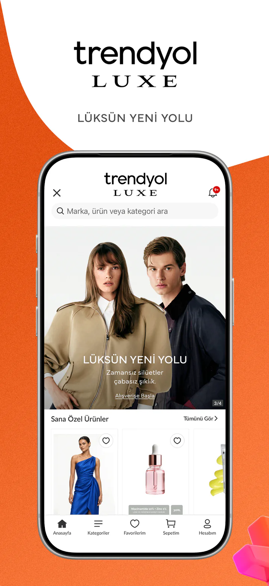

Ürün & deneyim
Kullanıcının uygulamada ne yapacağını ve bunu nasıl yapacağını netleştirelim.
- Kullanıcı akışları
- Ekran tasarımları
- İlk sürüm kapsamı
İnsanların tekrar kullanmak isteyeceği, işinize uygun bir mobil ürün. Ekranlardan sunucu tarafına kadar bütün deneyimi birlikte tasarlayalım.

İyi bir uygulama, doğru iş akışıyla başlar. İlk sürümde hangi özelliklerin gerekli olduğunu birlikte belirleyerek geliştirmeyi planlarız.
Kullanıcının uygulamada ne yapacağını ve bunu nasıl yapacağını netleştirelim.
Mobil arayüzü, verileri ve servisleri aynı ürünün parçaları olarak geliştirelim.
Gerçek kullanım senaryolarını ve farklı ekranları birlikte kontrol edelim.
Ödeme, bildirim, yönetim paneli ve üçüncü taraf servisler proje kapsamına göre belirlenir. Mağaza hesapları, servis ücretleri ve yayın süreçleri teklif aşamasında netleştirilir.
Özelliklerin sayısı, entegrasyonlar ve test kapsamı teslim takvimini belirler. Geliştirme ve mağaza değerlendirme adımlarını ayrı ayrı planlarız.
Muhammet Temel · Yazılım Mühendisi ve Full Stack Developer. Teknik çalışmalarımı GitHub profilimde inceleyebilirsiniz.
Hedef kitlenizi, çözmek istediğiniz problemi ve aklınızdaki özellikleri paylaşın. Uygun başlangıç kapsamını birlikte çıkaralım.
Sık sorulan sorular ↗